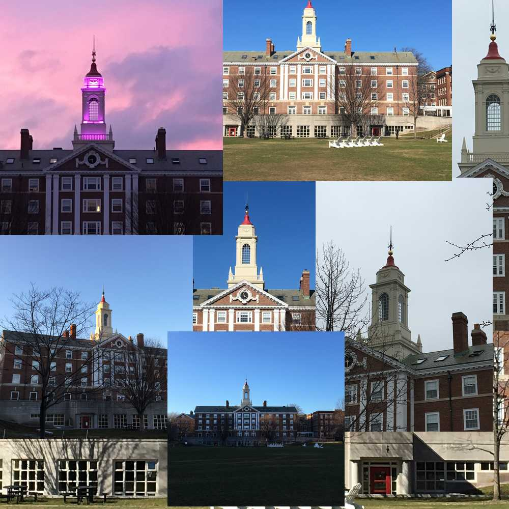
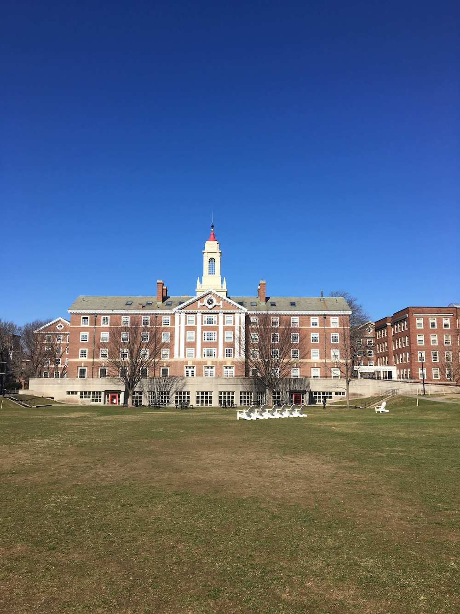
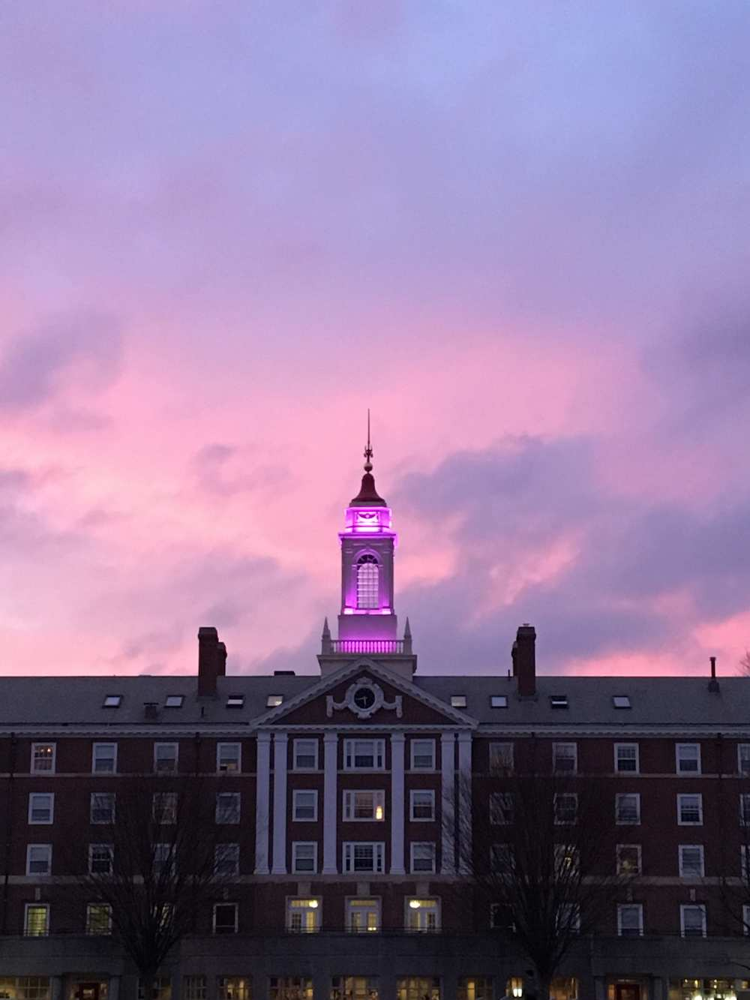
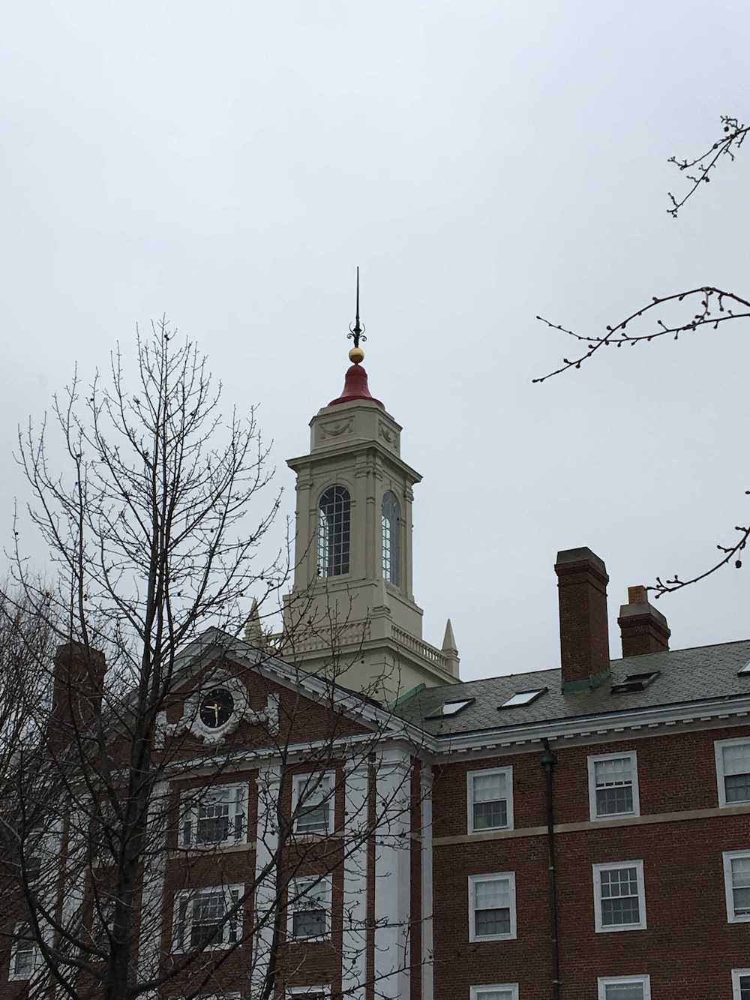
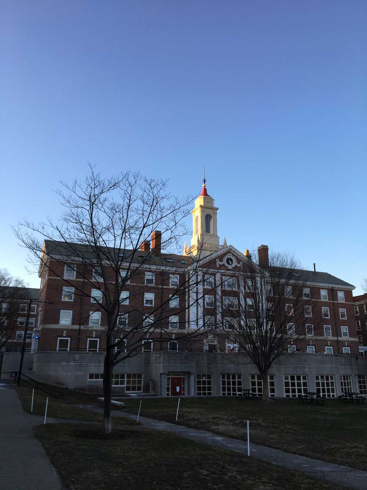
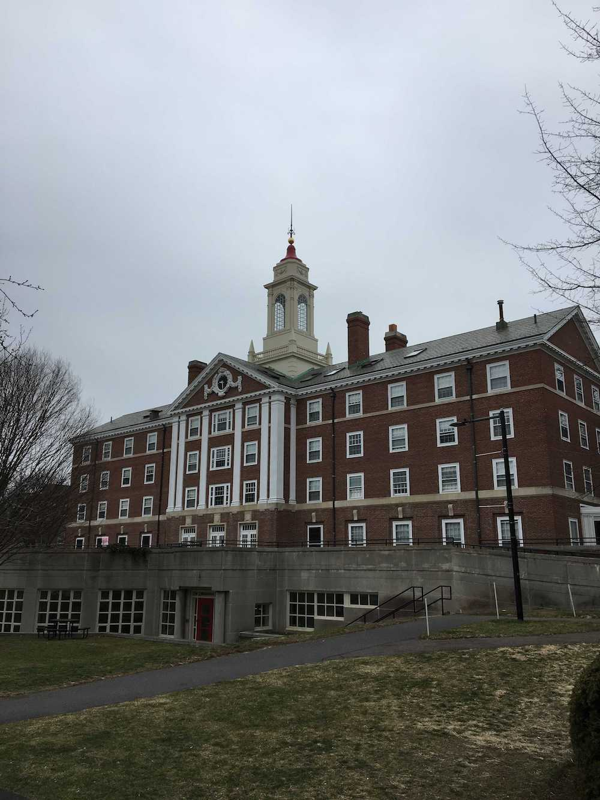

Every day starts with the same routine: I wake up, brush my teeth, wash my face, grab something clothing, then head outside to whatever class I ought be attending. Every time I leave in the morning, I glance up at the Pfoho bell tower, a landmark in Harvard's Radcliffe Quadrangle. My interest in light and mood lead me to consider how different lighting affects the way I see the bell tower, and whether or not my mood was affected by the type of light illuminating the tower. Thus, I photographed the bell tower over the course of 8 days, and noted my mood while doing so. For the sake of comparison, I also photographed the tower at night, occasionally. The photographs attached are the best of the collection/ and or they showed a particular style of lighting effectively.
The bell tower is the white column atop the building, pictured above.
Thankfully, the weather was predominantly very pleasant throughout my study -- there was only one overcast day (white light). Let's begin with sunny skies:
The secret about this photo is that the temperature on this day was cold... However, if I were to show you the image and inquire about the temperature, you'd probably guess that it was moderate, possibly even 'shorts weather'. The overall feeling of warmth is probably greatly assisted by the white deck chairs; they seem to glow in the sun. Moreover, deck chairs are associated with warmth -- they conjure up images of lazing on the beach and soaking up rays. This may be less true for me, though -- I've seen those deck chairs buried in snow a few too many times. Mostly, I'd credit the strong, orange light and blue skies for the feelings of warmth and happiness. When I walked outside for the first time on this morning, my mood was fantastic, despite the temperature being low.
This picture was taken on the evening of the photo above. On some nights, residents of Pfoho choose to light up the Pfoho bell tower with coloured lights; I was struck by how well the purple lights matched the purple background. With that being said, the purple also looked decidedly tacky, and, were I trying to take a good photograph, I almost certainly would have opted to keep the bell tower out of the shot. The feeling of 'festivity' that the colour presents was good for my mood, but I wouldn't say that the effects were significant.
Just to prove my point, this is the next morning -- almost identical aesthetic, almost identical mood.
Above is an image of the singular overcast day during my study. Ironically, this was also the day of a computer science midterm... This was also easily the worst day in terms of mood -- the white light and grey skies did not make for a pleasant scene. With that being said, I may also be a biased sample (because of the aforementioned computer science midterm).
 Here's a nice comparison; similar shots. The above two are taken from different sides of the building, with one taken on another pleasant, sunny day, and the other taken on the overcast day. It's easy to see how one promotes a pleasant state of mind, whilst the other makes the building (and the veiny trees) look ominous, depressed.